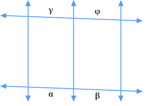
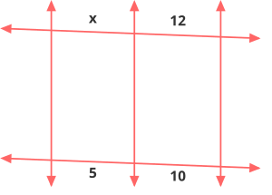
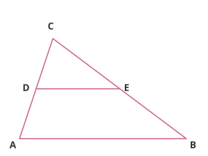
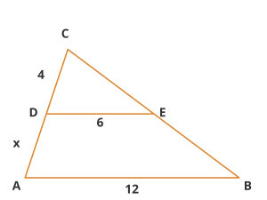
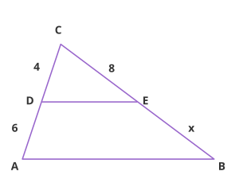

Se duas retas transversais cortam um feixe de retas paralelas, então a dimensão de dois segmentos quaisquer são proporcionais aos segmentos correspondentes na outra reta transversal.

É possível manter a proporção substituindo um segmento pela soma de dois segmentos adjacentes:
Exemplos — Teorema de Tales
Dados os segmentos \(5\), \(10\), \(x\) e \(12\) como na figura, calcule \(x\):

\(\dfrac{5}{10} = \dfrac{x}{12}\)
\(\dfrac{x}{12} = \dfrac{1}{2}\)
\(x = \dfrac{1}{2} \cdot 12\)
\(x = \dfrac{12}{2}\)
\(\boxed{x = 6}\)
Triângulos Semelhantes
Se dois triângulos possuem dois ângulos iguais, então são semelhantes e possuem lados proporcionais.

Exemplos — Triângulos Semelhantes
No triângulo abaixo, \(CD = 4\), \(DE = 6\), \(AB = 12\) e \(DA = x\). Calcule \(x\):

\(\dfrac{4}{4+x} = \dfrac{6}{12}\)
\(\dfrac{4}{4+x} = \dfrac{1}{2}\)
\(4 = \dfrac{1}{2} \cdot (4+x)\)
\(4 \cdot 2 = 4+x\)
\(8 = 4+x\)
\(\boxed{x = 4}\)
No triângulo abaixo, \(CD = 4\), \(DA = 6\), \(CE = 8\) e \(EB = x\). Calcule \(x\):

\(\dfrac{4}{6} = \dfrac{8}{x}\)
\(4x = 8 \cdot 6\)
\(4x = 48\)
\(\boxed{x = 12}\)